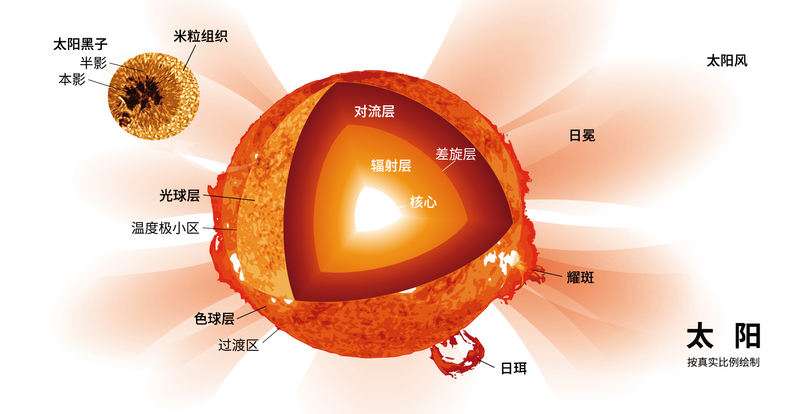
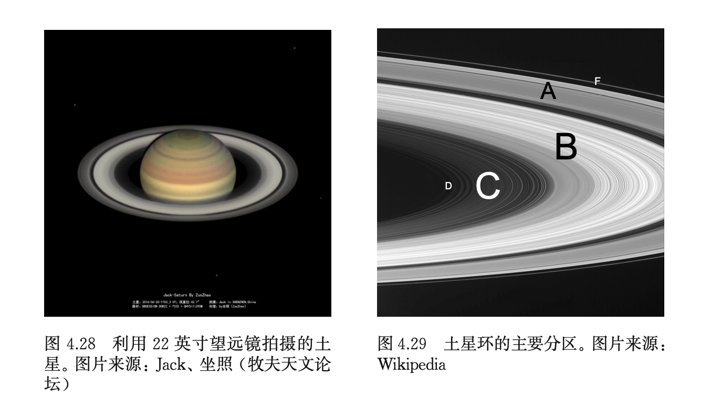
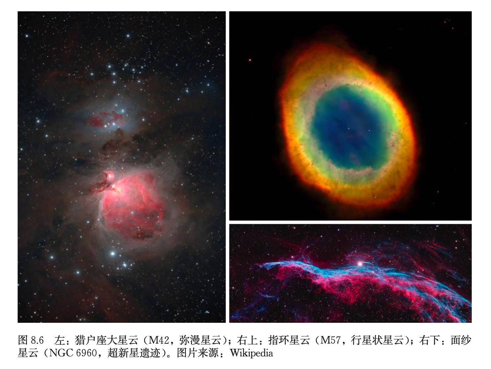
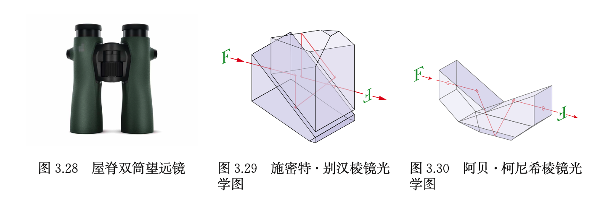
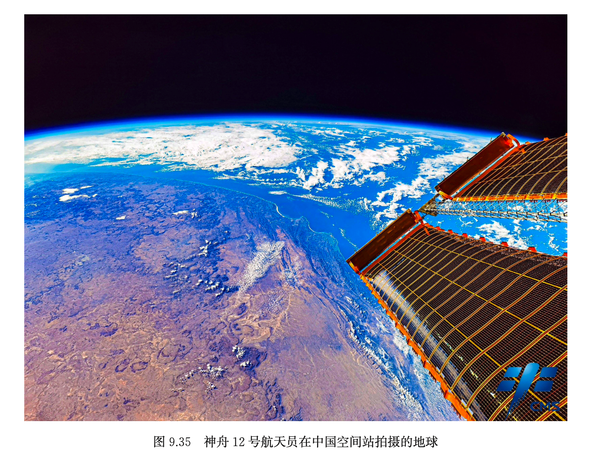
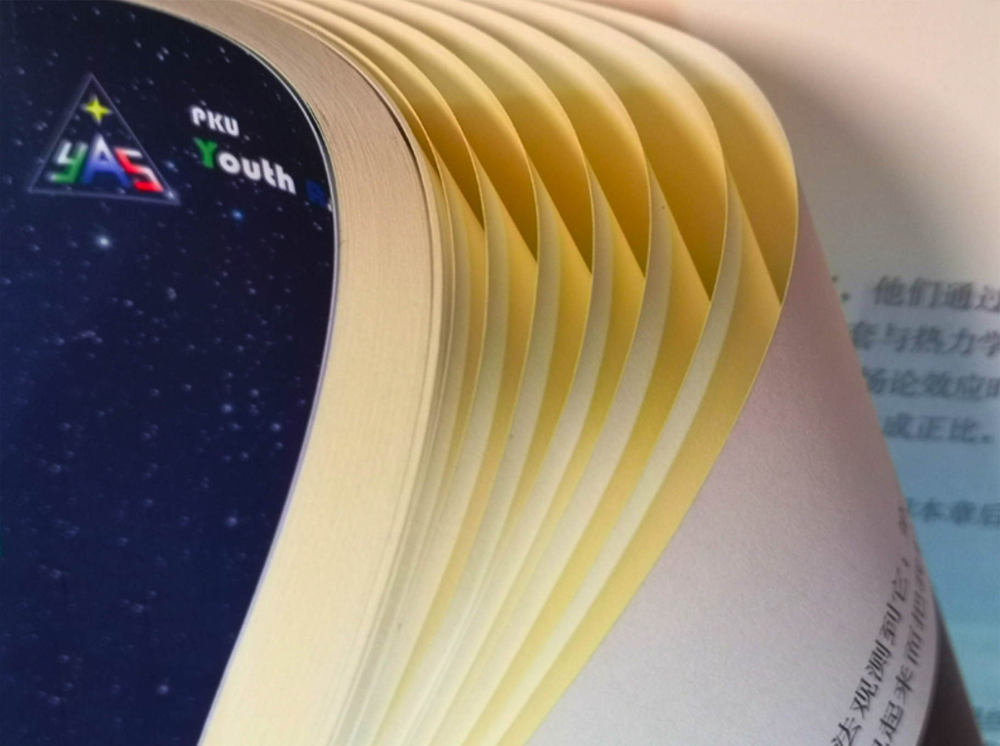
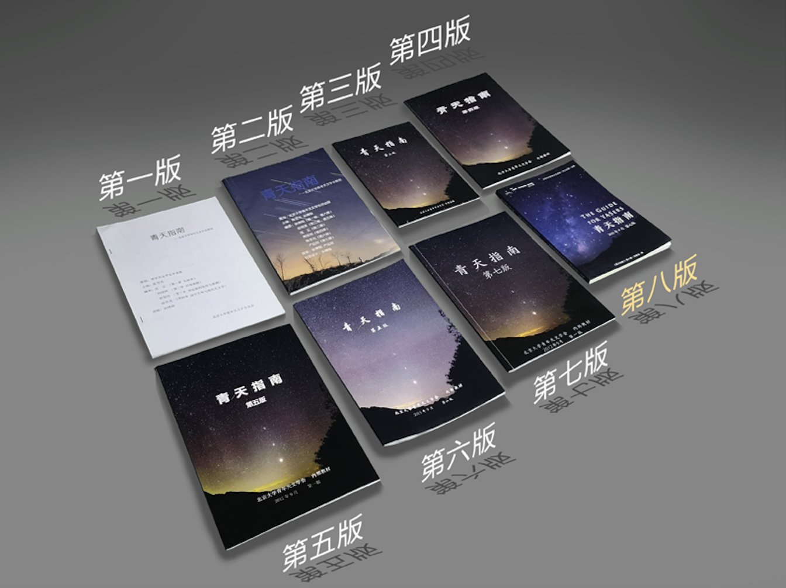

新版修订
焕然一新，
如日方升。
修订《星空导览》《深空天体》《资源》三章，重新编写《天文望远镜》《太阳系》《特殊天象》《青年天文学会简介》四章，新增《时间、历法和星空文化》《恒星》《太空探索》三章。纷繁奇妙，待您探索。
专业排版
LaTeX 引擎，
动力澎湃。
采用专业的 LaTeX 排版引擎进行排版，图片清晰、版面美观，力求达到出版效果。电子版中使用了 hyperref 宏包，让 PDF 文件特别适合在电子设备上阅读。

视觉升级
甄选图片，
尽态极妍。
全书精选 213 张天文学照片与插图，对第七版不清晰的插图进行替换，部分插图甚至进行了矢量化，尽享宇宙浩瀚与星河烂漫。



内容更新
包罗万象，
推陈出新。
与第七版相比，现版本删除了已经过时的天文学知识与信息，对标天文学前沿领域，包揽国内外最新消息。万象更新，期待您的品鉴。
装帧用纸
道林纸张，
匠心甄选。
精选 80g 米黄色道林纸，对比度、伸缩率和表面强度有较高的提升，酸碱性也应接近中性或呈弱碱性。米黄色的纸张映衬出柔和的质感，阅读起来更加护眼。


版本传承
涛声依旧，
一脉相传。
1990 年 4 月 25 日，哈勃空间望远镜升空翌日，学会初创。2012 年 9 月，《青天指南》第一版诞生。学会三十余年筚路蓝缕，指南近十年薪火相传。